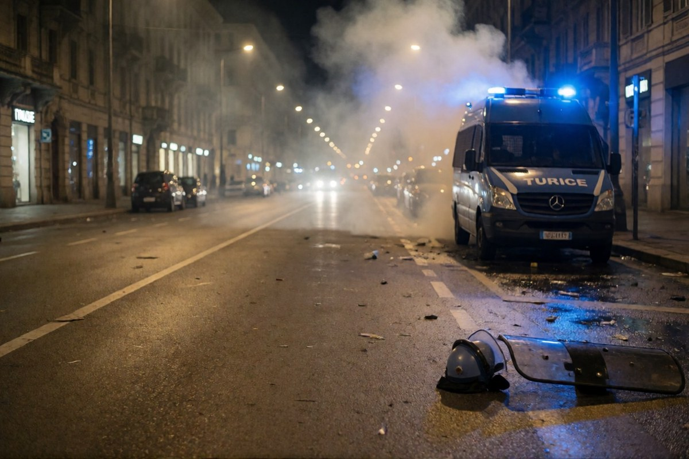

Cronaca · 6 novembre 2026
Scontri per Askatasuna a Torino: 16 misure, contestato il tentato omicidio

Nove mesi dopo il corteo del 31 gennaio, il gip accoglie la richiesta della procura. Fra le accuse, a vario titolo, tentato omicidio, danneggiamento aggravato e lesioni aggravate.
di Franco Zanghì
La Digos di Torino ha eseguito 16 misure cautelari per gli scontri del 31 gennaio 2026, il giorno del corteo nazionale contro lo sgombero del centro sociale Askatasuna. Fra le accuse, a vario titolo, c'è il tentato omicidio. Per tutti gli indagati vale la presunzione d'innocenza fino alla sentenza definitiva.
Che cosa accadde il 31 gennaio
Lo storico centro sociale di corso Regina Margherita era stato sgomberato a dicembre. Al corteo nazionale arrivarono antagonisti da tutta Italia. Alla fine della manifestazione un mezzo del reparto mobile della polizia fu dato alle fiamme: secondo la ricostruzione degli investigatori riportata dall'Ansa, a bordo c'era un agente. Poco distante un poliziotto rimase isolato: gli tolsero casco e scudo e un gruppo lo colpì con calci e con un martello. Quel giorno i feriti fra le forze dell'ordine furono 103, alcuni con prognosi fino a cento giorni.
I passaggi dell'inchiesta
A ottobre la procura ha fatto eseguire 14 perquisizioni e ha notificato 19 avvisi per gli interrogatori preventivi. È un passaggio che vale la pena spiegare: con la riforma voluta dal ministro Nordio, in molti casi il giudice deve ascoltare l'indagato prima di decidere su una misura cautelare. Qui la procura ha seguito quella strada: prima gli avvisi, poi la decisione del giudice.
L'ordinanza del giudice per le indagini preliminari dispone 16 misure fra carcere, arresti domiciliari, divieti di dimora e obblighi di presentazione alla polizia giudiziaria. Le accuse, a vario titolo, sono tentato omicidio, danneggiamento aggravato e lesioni aggravate; il tentato omicidio è contestato in relazione all'incendio della camionetta. Fra i destinatari, scrivono l'Ansa e il Fatto Quotidiano, c'è un antagonista che gli inquirenti considerano uno dei leader di Askatasuna. Alcuni vivono fuori Torino, e le perquisizioni hanno riguardato Piemonte, Lombardia e Toscana.
Il punto
Chi difende questi indagati dicendo che si tratta di militanti politici sbaglia indirizzo. Il dissenso si esprime in piazza, con i cartelli e con la voce. Un uomo a terra colpito con un martello non è dissenso: è violenza contro una persona che stava lavorando e che indossava una divisa per conto di tutti.
Allo stesso tempo, questa inchiesta mostra che le garanzie funzionano anche quando l'accusa è pesantissima: interrogatori prima delle misure, un giudice terzo, accuse ancora da provare. Proprio per questo i processi dovrebbero arrivare in fretta. Nove mesi per le misure cautelari sono tanti, e un processo che dura anni non serve né agli agenti feriti né a chi è innocente. E resta un punto fermo: lo sgombero di un centro sociale non giustifica nulla.
Fonti
- Ansa / Il Globo, «Scontri per Askatasuna a Torino, 16 misure cautelari. Contestato un tentato omicidio», 5 novembre 2026
- Il Fatto Quotidiano, «Scontri Askatasuna Torino: 16 misure cautelari, arrestato un leader», 5 novembre 2026
- Dire, «Guerriglia a Torino, misure per 16 militanti di Askatasuna», 5 novembre 2026
- LaMilano, «Torino, scontri al corteo per Askatasuna: 16 misure cautelari per militanti antagonisti», 5 novembre 2026
Le accuse sono contestate a vario titolo e non tutte riguardano tutti gli indagati. Le misure cautelari sono provvedimenti provvisori, impugnabili davanti al tribunale del riesame, e non anticipano alcun giudizio di colpevolezza.